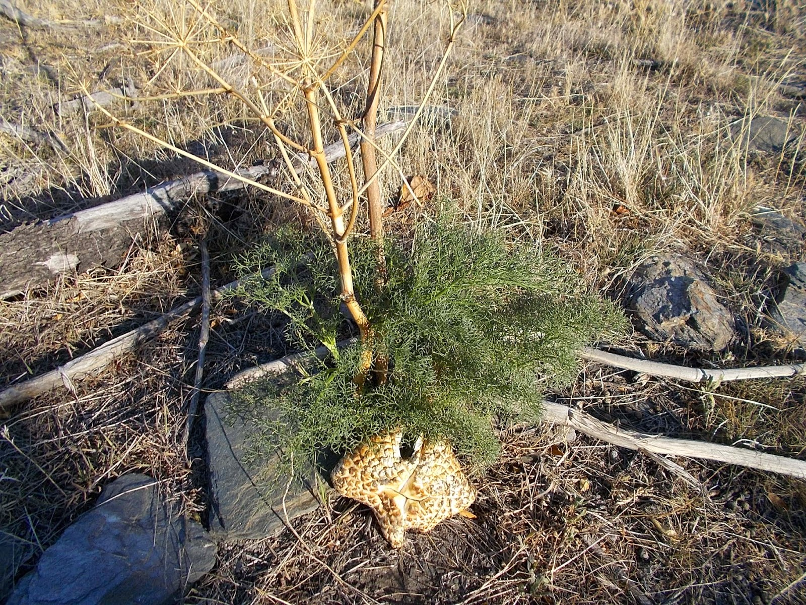

Ayuntamiento de Senés
JARDIN BOTANICO DE ESPECIES AUTOCTONAS DE SENES

Ferula communis

La cañaheja (Ferula communis) es una planta herbácea perenne de gran porte, característica de zonas mediterráneas secas y abiertas. Destaca por su tamaño, su tallo robusto y su presencia llamativa en el paisaje.
Puede alcanzar entre 1,5 y 3 metros de altura, con un tallo grueso y hueco. Sus hojas son grandes, muy divididas y de aspecto plumoso. Durante la floración, produce grandes inflorescencias en forma de umbela de color amarillo, muy visibles desde la distancia.
La cañaheja es propia de regiones mediterráneas, donde crece en laderas, campos abandonados y zonas abiertas con suelos secos y bien drenados. Es frecuente en terrenos alterados o poco cultivados.
En la Sierra de los Filabres, aparece en áreas soleadas y secas, formando parte del matorral y destacando por su tamaño y su floración primaveral.
La cañaheja contiene compuestos químicos de interés, algunos de ellos con propiedades medicinales estudiadas. Sin embargo, ciertas variedades pueden resultar tóxicas, por lo que su uso tradicional ha sido limitado.
Históricamente, algunas especies del género Ferula han sido utilizadas para la obtención de resinas y sustancias aromáticas.
La cañaheja simboliza la fuerza y la presencia en el paisaje, debido a su gran tamaño y visibilidad. Representa la capacidad de destacar y prosperar en entornos abiertos y exigentes.
También se asocia con la dualidad entre utilidad y riesgo, debido a sus posibles propiedades tóxicas.
En Senés, la cañaheja en si no se utiliza ya que es una planta peligrosa, sin embargo produce unas setas comestibles de gran calidad culinaria.
La cañaheja florece en primavera, produciendo grandes umbelas de flores amarillas que atraen a numerosos insectos polinizadores.
El tallo de la cañaheja es hueco y muy resistente, lo que le permite alcanzar grandes alturas en poco tiempo.
En la antigüedad, algunas especies del género Ferula se utilizaban para fabricar utensilios y como fuente de resinas aromáticas.